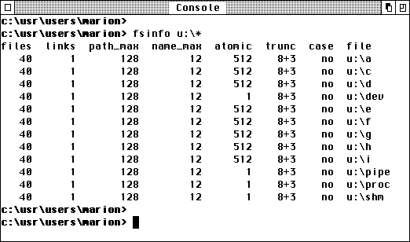

Das MiNT-Projekt des Kanadiers Eric Smith ermöglichte zum ersten mal den Einsatz alternativer Dateisysteme, und damit die Verwendung langer Dateinamen unter TOS. Dies wurde durch die Einführung neuer GEMDOS Funktionen erreicht.
Die neuen Funktionen müssen jedoch nicht nur dann vorhanden sein, wenn MiNT installiert ist: MagiC besitzt ab der Version 3.0 kompatible Funktionen, und auch MetaDOS-Treiber mit entsprechender Funktionalität sind schon gesichtet worden. Aus diesem Grund sollten Abfragen auf den MiNT-Cookie unbedingt aus allen Programmen entfernt werden. Das Vorhandensein einer GEMDOS-Funktion wird daran erkannt, daß als Funktionsergebnis nicht der Wert EINVFN zurückgeliefert wird.
Um Informationen über das zugrundeliegende Dateisystem zu erhalten, bedient man sich der GEMDOS-Funktion Dpathconf.

Die obige Abbildung zeigt die Beschränkungen eines reinen TOS-Dateisystems für die verschiedenen Laufwerke. Die Spalte files gibt an, wieviele Dateien pro Prozess maximal geöffnet sein dürfen (vom Prozess-internen Limit abgesehen). Unter links kann abgelesen werden, wieviele Verweise (Links) auf eine Datei maximal existieren können. path_max zeigt, wie lang komplette Dateinamen (inklusive Pfad) auf dem Dateisystem werden können. Die Spalte name_max informiert über die maximale Länge eines Dateinamens, und unter atomic ist angegeben, wieviele Bytes in einem Rutsch geschrieben werden können. Besonders wichtig ist die Spalte trunc, die darüber Aufschluß gibt, wie zu lange Dateinamen abgeschnitten werden. Zu guter Letzt kann man per case erfahren, ob und auf welche Weise Dateinamen mit gemischter Groß- bzw. Kleinschreibung unterstützt werden.
Als Faustregel gilt: Dateinamen und -pfade immer genauso weiterverwenden, wie sie vom Betriebssystem geliefert worden sind; Dateinamen grundsätzlich klein schreiben, denn auch auf Systemen mit gemischter Groß- und Kleinschreibung sind großgeschriebene Dateinamen eher die Ausnahme!
Querverweis: XFS-Konzept in MagiC Dpathconf